HIST 270 · History of China · Chapter 3 · Lecture 2
The Han Founding and the Confucian State
206 BCE–87 BCE · Founding a More Durable Empire · Managing the Xiongnu Frontier · Emperor Wu and the Confucian State Background essay ↗
Course title card (Han court, map, coins, bamboo books). A designed graphic, not a historical source.
Central claim · Han, 206 BCE–220 CE
How Did Han Make Empire More Durable?
Central claim: Han did not reject Qin. Han rulers kept the centralized bureaucratic state while reducing some burdens, experimenting with frontier policy, expanding state economic power, and increasingly recruiting officials through Confucian learning.
In shorthand: Confucian rhetoric + Legalist bureaucratic methods.
Qin built the imperial machine. Han made it durable.
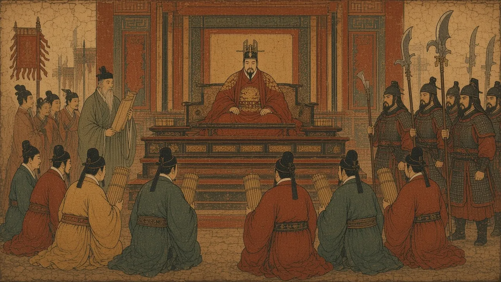
A Han emperor on a raised dais receives kneeling officials holding bamboo records, while a Confucian scholar with scrolls stands beside armed guards. AI-generated interpretation in Han tomb-mural style, not a historical record.
Start here · How to study this deck on your own
Three Parts, Self-Checks, and an Open Study Buddy Button Guide You Through This Deck
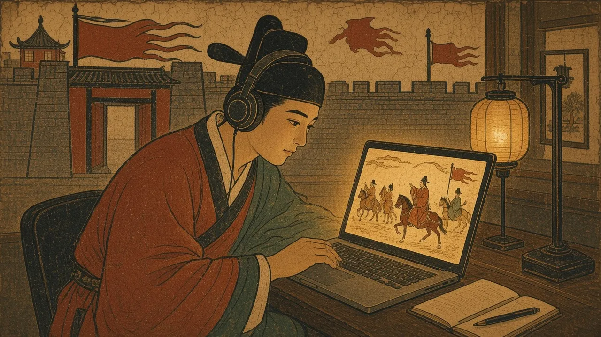
A student studies at night with headphones; on the laptop screen glows a painted frieze of a Han emperor greeting mounted envoys. AI-generated interpretation in Han tomb-mural style, not a historical record.
Click Open Study Buddy (lower right) or press N for each slide's Study Buddy notes.
Work through three parts; each ends with a self-check.
Four Reading Guide checkpoints: Q3, Q4, Q5, and Q6.
Click a teal dotted word for a definition; the Pierian Spring is required study.
Arrow keys move; Esc shows a slide map. All due dates are on Canvas.
×
Han
Han (hahn): the dynasty founded by Liu Bang that ruled China from 206 BCE to 220 CE, with a short break under Wang Mang (pp. 42, 44). Popups like this one close with Esc, the × mark, or a click outside the card.
Roadmap · Keep the machine, change how it runs
Where We’re Going Today
Part 1 · Founding
Liu Bang wins the civil war; Han keeps and adjusts Qin’s system (selective inheritance)
Part 2 · Frontier
The Xiongnu: marriage diplomacy, gifts, and war
Part 3 · Emperor Wu
State monopolies pay for expansion; Confucian learning and remonstrance enter government
Question: What did Han keep from Qin, what did it change, and why did that make the empire last?
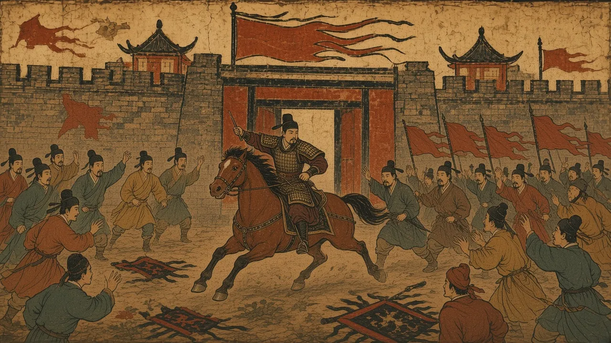
Segment 1 of 3 · Part 1
Founding a More Durable Empire
What did Han keep from Qin, and what did it change? Q3
Rebel soldiers and townspeople cheer as a commoner general rides through a city gate under new banners. AI-generated interpretation in Han tomb-mural style, not a historical record.
Part 1 · Bridge from Lecture 1 · 210–207 BCE
The Qin Collapse Opened a Political Vacuum
After the First Emperor’s death, court conflict weakened the succession.
Harsh demands, military losses, and rebellion destabilized Qin rule.
By 207 BCE, the Qin court had fallen.
Regional commanders and former Qin officials competed to decide what would replace the empire.
Xiang Yu and Liu Bang emerged from that struggle.
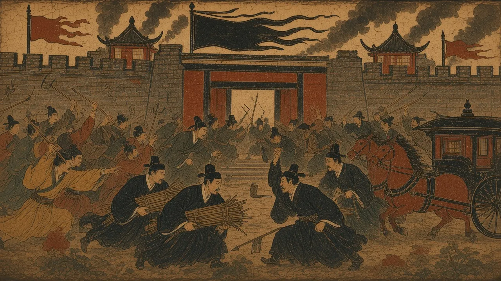
Rebels with farm tools and spears storm the gate of a Qin palace while officials in black robes flee with bundles of records. AI-generated interpretation in Han tomb-mural style, not a historical record.
Part 1 · Rivals for the empire · 206–202 BCE
The Contest for Empire
Xiang Yu
Aristocratic military background; extraordinary battlefield reputation
Divided the post-Qin realm among regional kings; had difficulty maintaining durable coalitions
Liu Bang
Modest, commoner background; relied on talented advisers and generals
Built alliances, distributed rewards, defeated rivals, founded Han
×
One man, three names
Liu Bang (Liú Bāng) is his personal name. As emperor he is called Emperor Gao (Gāo) in your textbook and Gaozu (Gāozǔ, “High Ancestor”) in many other books (p. 42). All three mean the same man.
Liu Bang has three names in your reading.
Part 1 · Civil war · 206–202 BCE
The Civil War, 206–202 BCE
Political problem: victory required more than battlefield success.
Xiang Yu’s treatment of rivals and allies weakened his coalition.
Liu Bang assembled a broader coalition of commanders, advisers, and regional partners.
Liu Bang won and proclaimed the Han Dynasty.
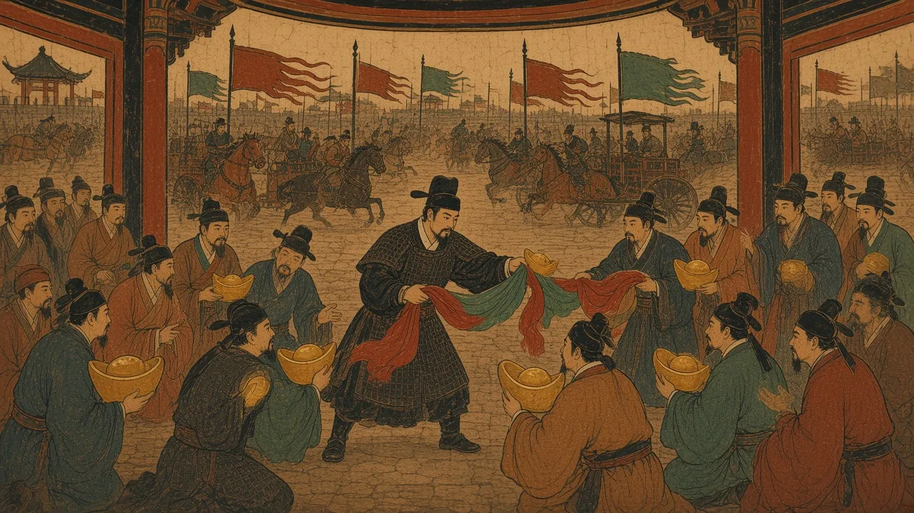
A general in a tent shares out gold and bolts of silk to kneeling commanders and advisers, while banners of many allied armies stand outside. AI-generated interpretation in Han tomb-mural style, not a historical record.
Part 1 · Emperor Gao · r. 202–195 BCE
Emperor Gaozu, r. 202–195 BCE
Reduced taxes and corvée demands after years of war.
Reestablished order without abandoning Qin’s administrative structure.
Used appointments, rewards, and negotiated alliances to stabilize rule.
Inherited an empire that was centralized, but politically unsettled.
×
Corvée
Corvée (kor-VAY): unpaid labor that ordinary people owed the state each year, for roads, walls, canals, or the army. Under Han, adults owed a month of labor service a year (p. 43).
Key term: corvée
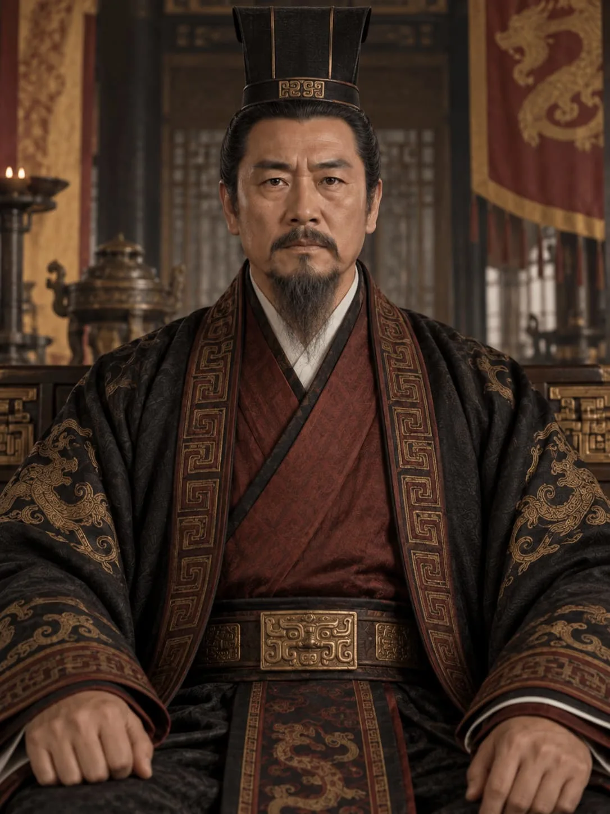
Emperor Gaozu (Gāozǔ), founding the Han settlement. Course illustration, not a portrait from his lifetime.
Part 1 · Recovery after war · 202–180 BCE
Early Han Recovery
Reducing burdens
Lower taxes and labor demands
Time for households and agriculture to recover
Keeping capacity
Appointments and commanderies
Central records, laws, and taxation
Adaptation, not abolition, made recovery possible.
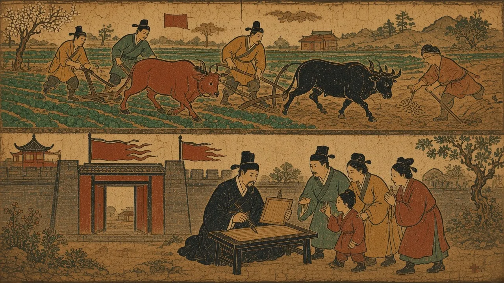
Farmers plow and sow fields in spring while a county clerk with a tally board records households beside a village gate. AI-generated interpretation in Han tomb-mural style, not a historical record.
Q3 concept · Selective inheritance
Concept: Selective Inheritance Keeps Some Parts and Changes Others
Selective inheritance
Keeping some parts of an older system and changing others.
Professor Austin at the chalkboard. Cartoon supplied by Steven Austin; not a historical source.
Part 1 · Qin and Han compared
Selective Inheritance, Not Rejection
Kept
Centralized administration, appointed officials, taxation, law, and military organization.
Changed
The burden of rule, the rhetoric of legitimacy, and the balance between center and regional powers.
Han made Qin’s machinery more politically usable.
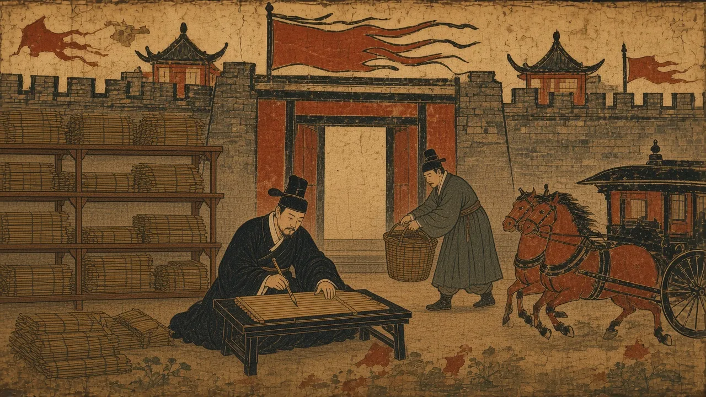
A Han official copies old bamboo records onto fresh strips while a servant carries out a basket of discarded wooden punishment tools. AI-generated interpretation in Han tomb-mural style, not a historical record.
Part 1 · Kingdoms and commanderies
A Mixed System: Kingdoms and Commanderies
Directly governed commanderies
Officials appointed through the central state
Closer fiscal and administrative control
Semi-autonomous kingdoms
Regional rulers received political rewards
Local autonomy remained subject to negotiation
Mechanism: the allies who helped Liu Bang win expected rewards.
Part 1 · Government from court to county
The Han State Reached Down to the Local Level
Central ministries administered major areas of government.
Commanderies and counties were governed by appointed officials.
Local officials collected taxes, judged disputes, and organized public works.
They also recommended talented local men for government service.
The Han emperor ruled a vast empire through layers of officials who connected the central court to local communities.
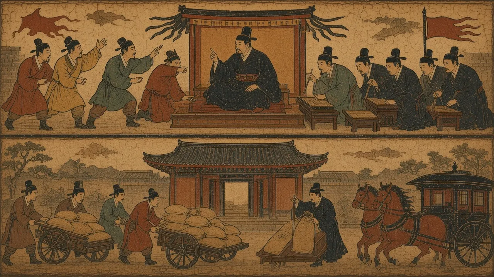
A county magistrate on a dais hears two farmers in a dispute while clerks record the case and villagers bring tax grain in carts. AI-generated interpretation in Han tomb-mural style, not a historical record.
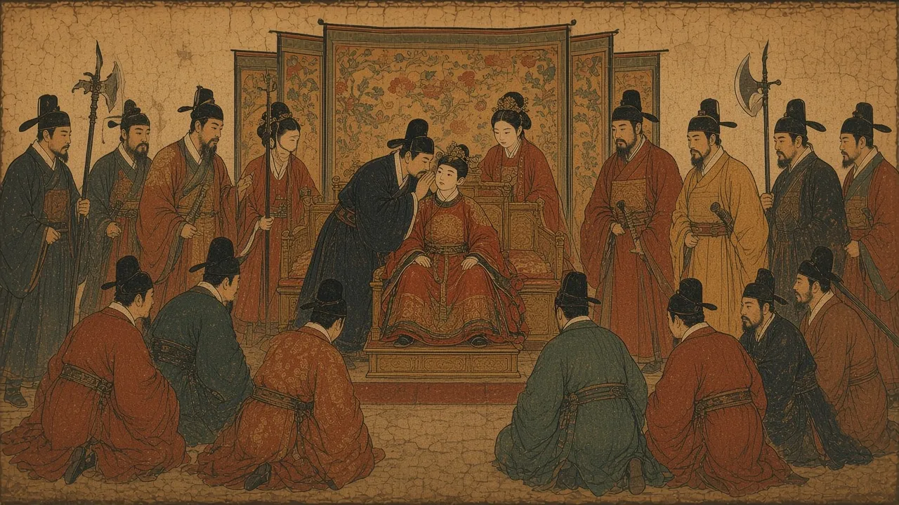
Part 1, continued · Vulnerabilities to Dynasty
Internal Divisions and Frontier Threats
Where could a durable empire still break?
A boy emperor on the throne, his mother behind a screen, regional kings with armed retainers, and a eunuch whispering at his ear. AI-generated interpretation in Han tomb-mural style, not a historical record.
Part 1 · Vulnerabilities to Dynasty · 1 of 2
Vulnerabilities to Dynasty: Decentralization
Decentralization
Semi-autonomous kingdoms preserved regional power inside the Han empire.
Regional kings could control resources, officials, and armies beyond the center’s immediate reach.
The arrangement rewarded allies but created potential rivals.
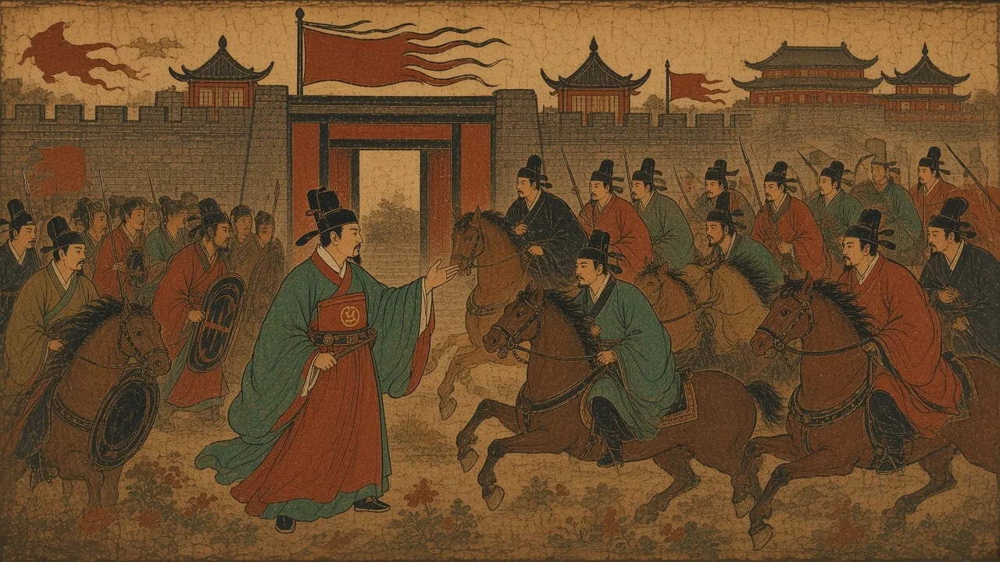
A regional king reviews his own army and storehouses outside his walled capital, far from the emperor's palace on the horizon. AI-generated interpretation in Han tomb-mural style, not a historical record.
Part 1 · Vulnerabilities to Dynasty · 2 of 2
Vulnerabilities to Dynasty: Barbarian Threat
Barbarian Threat
The mobile Xiongnu could raid across the northern frontier.
Han armies defended fixed agricultural settlements against a steppe confederation that could move rapidly.
Frontier security required changing combinations of diplomacy, material transfers, and warfare.
Core problem: Han rulers had to manage threats both inside the empire and beyond its borders.
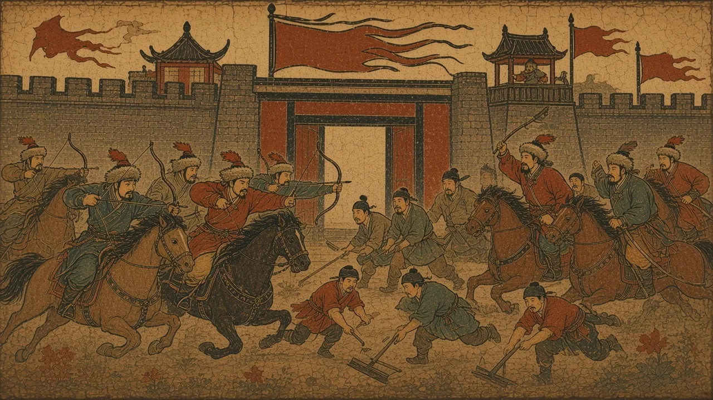
Mounted steppe archers gallop past a Han watchtower and rammed-earth wall while farmers in the fields below run for the gate. AI-generated interpretation in Han tomb-mural style, not a historical record.
Part 1 · Vulnerabilities at court
Vulnerabilities at Court
Empress dowagers and consort families
Could dominate regencies when emperors were young; kinship could become political power
Empress Lü exercised extraordinary power after Liu Bang’s death
Palace eunuchs
Gained influence through direct access to the emperor
Lacked the same aristocratic family bases as many officials; increasingly became important political actors
A centralized monarchy remained vulnerable when access to the emperor became access to power.
Part 1 · Decentralization · Kingdoms and central control · 154 BCE
The Rebellion of the Seven Kings, 154 BCE
Seven kings, including Wu and Chu, rebelled against Emperor Jing’s effort to reduce their authority.
Emperor Jing appointed the general Zhou Yafu to lead the Han response.
Han forces isolated the rebel kingdoms and defeated them within months.
The King of Wu fled; the King of Chu committed suicide as the rebellion collapsed.
Afterward, the Han reduced kingdoms’ independent administration and strengthened central control.
Significance: The 154 BCE rebellion accelerated the gradual reduction of kingdom autonomy and strengthened central control.
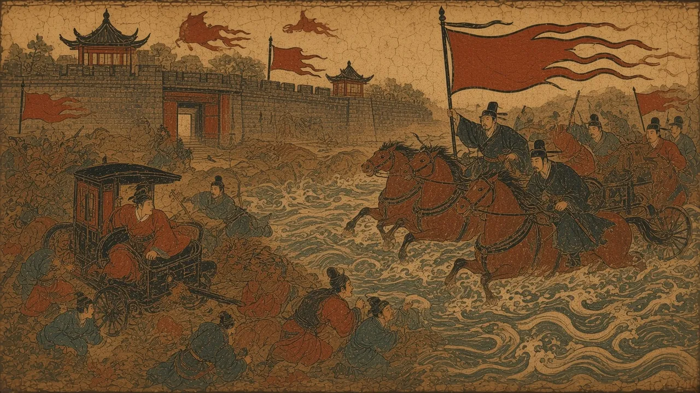
Han imperial cavalry under a general's banner cut off a column of rebel kings' troops at a river crossing. AI-generated interpretation in Han tomb-mural style, not a historical record.
Self-check · Segment 1 · not graded
Check Yourself: Founding a More Durable Empire
Answer each question from memory, out loud or on paper, then click Show answer. Nothing here is graded or recorded.
1. What did your textbook say Liu Bang’s commoner origins showed?
How thoroughly Qin had destroyed the old aristocratic order (p. 42).
2. Name two burdens Emperor Gao reduced.
Taxes and labor demands; he also eliminated some laws (p. 42).
3. What did he keep from Qin?
The centralized government: appointed officials, commanderies, records, law, and taxation (pp. 42–43).
4. Why did early Han create semi-autonomous kingdoms, and what happened to them?
Allies and relatives expected rewards; the kingdoms were then gradually reduced, especially after the Seven Kings rebelled in 154 BCE (p. 42).
5. Why did access to the emperor become access to power?
Every decision ran through one ruler, so empress dowagers, consort families, and eunuchs close to him could control government (pp. 43–45).
Contrast the founding of the Han Dynasty by Liu Bang (Emperor Gao) with the rule of the preceding Qin Dynasty. In what ways did the early Han administration simultaneously adopt and modify Qin political structures?
Han envoys lead a princess's carriage and carts of silk toward a camp of felt tents, watched by mounted steppe warriors. AI-generated interpretation in Han tomb-mural style, not a historical record.
Part 2 · Who were the Xiongnu? · c. 200 BCE
The Xiongnu Lived North of the Han Heartland
A multiethnic confederation of steppe peoples, not one simple tribe
United under a powerful ruler called the chanyu
Pastoral herders; horses gave their warriors extraordinary mobility
Their own hierarchy, diplomacy, and alliances
×
Chanyu
Chanyu (chahn-yoo): the title of the supreme ruler of the Xiongnu confederation. Your textbook calls him the Xiongnu “chief” and names two: Touman and his son Maodun (p. 42).
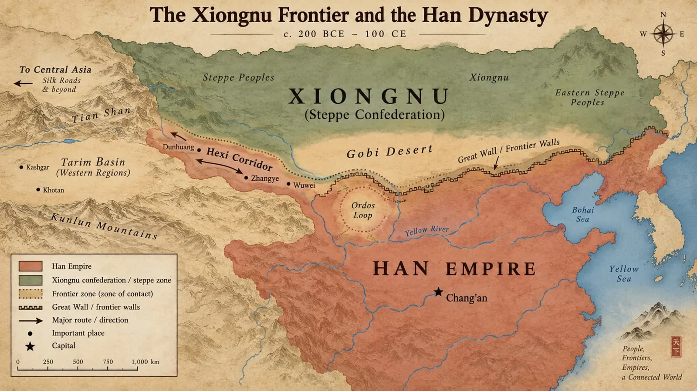
The Xiongnu frontier and the Han dynasty, c. 200 BCE–100 CE. Course-made orientation map; borders approximate.
Part 2 · The strategic problem
The Xiongnu: A Strategic Frontier Problem
Steppe mobility made raids and rapid movement difficult to counter.
Han rulers needed security without a permanently costly offensive.
Frontier policy shifted as resources, leaders, and circumstances changed.
No single strategy permanently settled the relationship.
Horses supported both pastoral life and warfare: they helped Xiongnu herders manage livestock and gave Xiongnu armies exceptional mobility as mounted archers. Course illustration, not a historical source.
Part 2 · Early Han strategy · after 200 BCE
Early Han Strategy: Heqin, “Peace and Kinship”
Military confrontation had failed to eliminate the threat.
Marriage alliances linked the courts symbolically.
Silk, grain, wine, and other goods moved north.
×
Heqin
Heqin (huh-chin), “peace and kinship”: the early Han policy of sending Han princesses as brides to the Xiongnu ruler along with yearly gifts of silk, grain, and other goods (pp. 42–43).
Key term: heqin
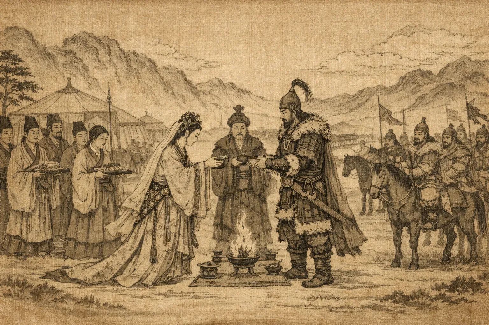
Heqin (héqīn): marriage alliance and frontier diplomacy. Course illustration, not a historical source.
Part 2 · Two readings of heqin
Gift or Tribute? Two Political Readings of Heqin
Han sources could describe the transfers as gifts or friendship.
Xiongnu leaders could regard the same transfers as tribute.
Raids nevertheless continued.
Heqin reduced pressure at times but did not permanently settle the frontier relationship.
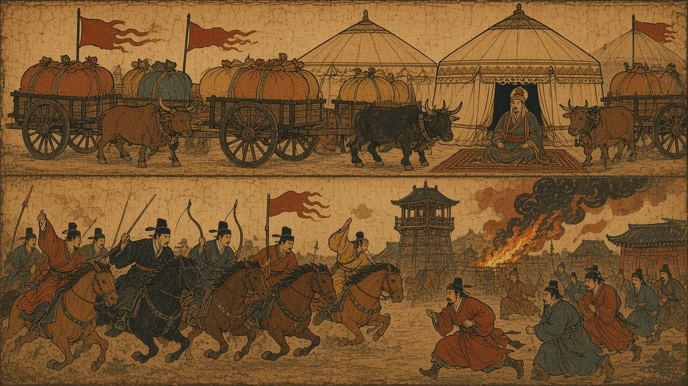
In the upper register, Han carts of silk roll north to a steppe camp; in the lower register, steppe horsemen raid a Han border village anyway. AI-generated interpretation in Han tomb-mural style, not a historical record.
Evaluate the Han Dynasty’s evolving strategies for managing the nomadic Xiongnu confederation. How did diplomacy, economic tribute, and military action interact on the northern frontier?
Why Emperor Wu expanded state economic power: Q5, then Confucian learning: Q6
At a state ironworks, workers pour molten iron while officials weigh salt and count coins for the treasury. AI-generated interpretation in Han tomb-mural style, not a historical record.
Part 3 · Emperor Wu · r. 141–87 BCE
Emperor Wu, r. 141–87 BCE
Expanded frontier warfare and imperial reach.
Strengthened central control over revenue and supply.
Elevated Confucian scholars and classical learning within imperial government.
Confucian political culture grew alongside Qin and Legalist administrative methods.
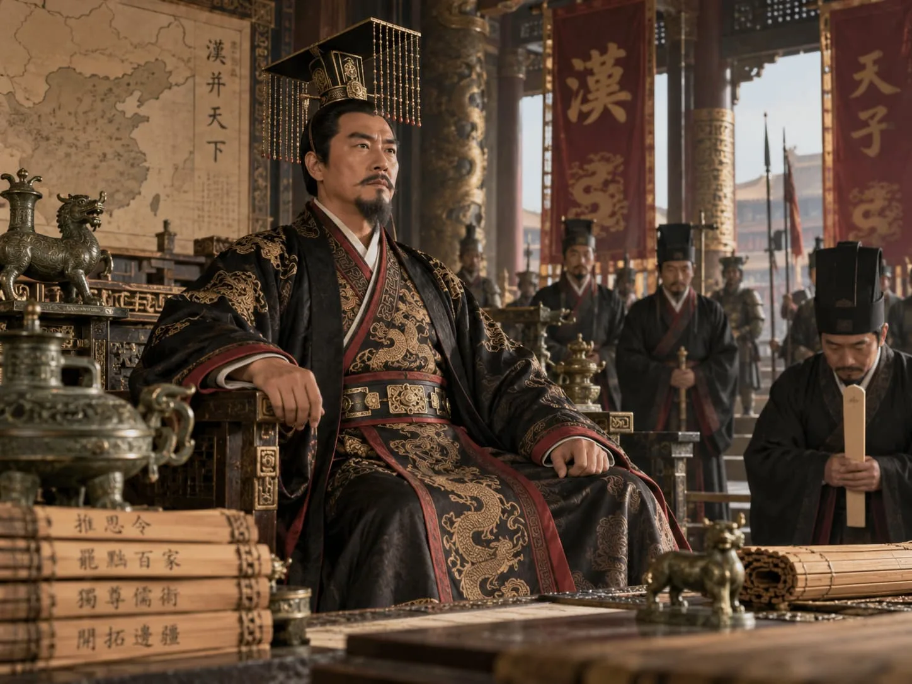
Emperor Wu (Wǔ): expansion and institutional change. Course illustration, not a portrait from his lifetime.
Q5 concept · State monopoly
Concept: A State Monopoly Makes the Government the Only Legal Seller
State monopoly
The government is the only legal seller of a good.
Professor Austin at the chalkboard. Cartoon supplied by Steven Austin; not a historical source.
Part 3 · Paying for the wars · 119 BCE
Expensive Wars → New State Revenue
Evidence: taxes on private business, state coinage, salt and iron monopolies, liquor monopoly, and grain-market intervention.
Mechanism: frontier wars required reliable revenue and supplies.
Consequence: Emperor Wu expanded direct government intervention in major industries and markets; he did not invent economic regulation.
×
Monopoly
A monopoly is control of an entire trade by one seller. In 119 BCE the Han state made itself the only legal producer of iron, salt, and liquor (p. 43).
Key term: monopoly
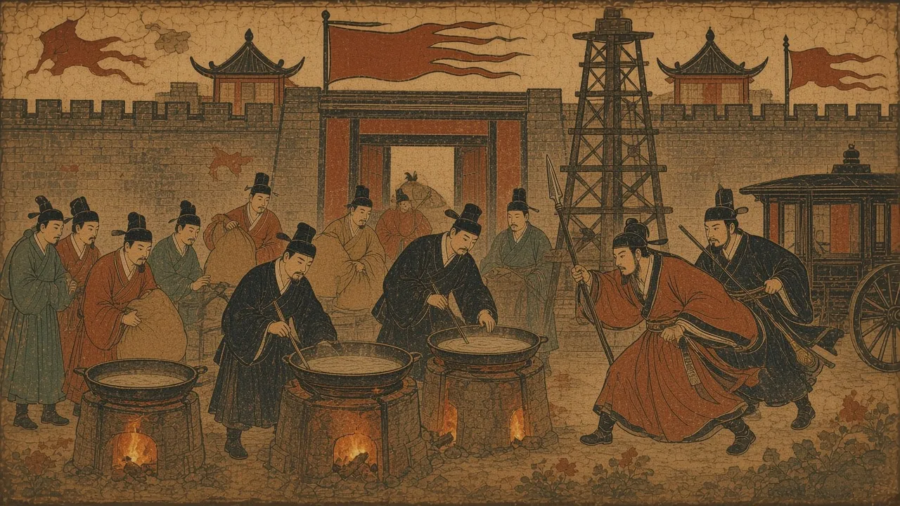
At a salt works, state officials take over the boiling pans while a wealthy merchant is turned away with his empty carts. AI-generated interpretation in Han tomb-mural style, not a historical record.
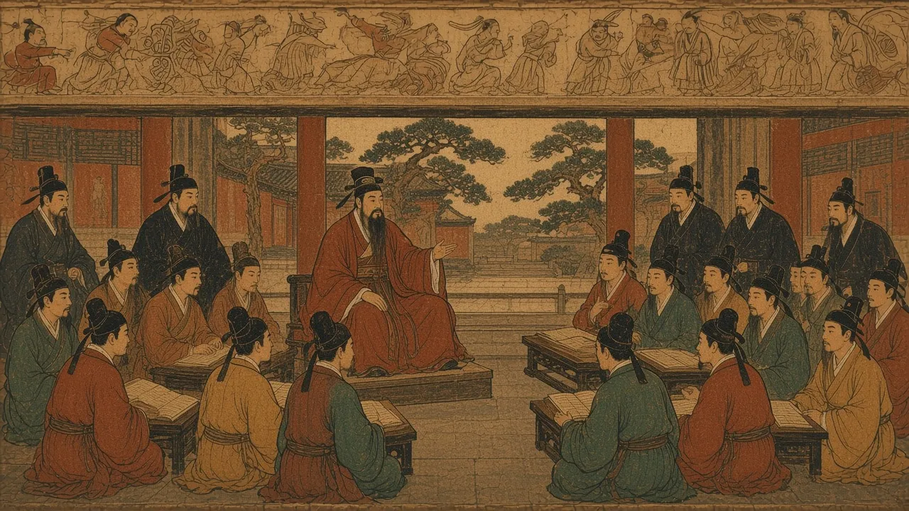
Part 3, continued
Confucian Learning and Imperial Government
How classical education changed official recruitment: Q6
Students in scholar caps kneel in rows at a national academy, reciting the classics before a master as officials look on. AI-generated interpretation in Han tomb-mural style, not a historical record.
Dong Zhongshu promoted classical learning and Confucian virtues.
124 BCE: the Imperial University trained students in the classics.
Classical education became increasingly important in official recruitment.
Classical learning became a tool for staffing and shaping the imperial bureaucracy.
×
Dong Zhongshu
Dong Zhongshu (doong jong-shoo): the Confucian scholar who advised Emperor Wu to honor only the Six Disciplines and the arts of Confucius (p. 44). He also linked Heaven, Earth, and humanity in one cosmic system, which you study in the next lecture (p. 47).
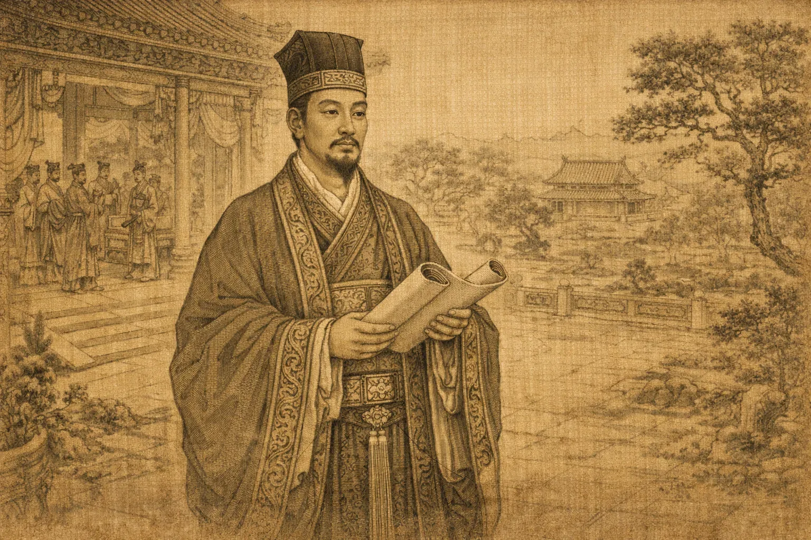
Scholar-official: classical learning and imperial service. Course illustration, not a historical source.
Q6 concept · Remonstrance
Concept: Remonstrance Is the Duty to Warn a Ruler Who Is Wrong
Remonstrance
The duty to warn or criticize a ruler when he is wrong.
Professor Austin at the chalkboard. Cartoon supplied by Steven Austin; not a historical source.
Part 3 · The scholar-official
The Scholar-Official Paradox
Useful to the emperor
Shared education and texts; administrative values and expectations
Internalized standards of conduct
Not blind obedience
Duty to remonstrate; criticism of misguided rulers
Persistent tension with imperial authority
Confucian training made officials useful to emperors, and obligated them to challenge emperors.
×
Remonstrate
To remonstrate is to warn or criticize a superior, respectfully but firmly, when he is wrong. Your textbook says one of the highest duties of a Confucian scholar was to admonish the ruler against misguided policies (p. 44).
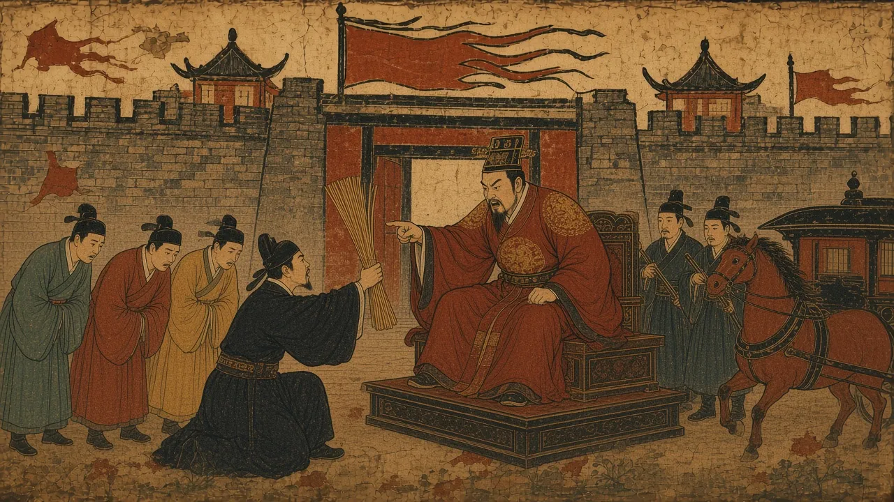
A Confucian official kneels before an angry emperor, holding up a bamboo memorial of criticism while other officials bow low in fear. AI-generated interpretation in Han tomb-mural style, not a historical record.
Moral language, classical learning, hierarchy, and duties.
Qin and Legalist methods
Appointed officials, law, taxation, records, discipline, and centralized command.
Han did not replace Legalism with Confucianism. It combined different political traditions inside one imperial state.
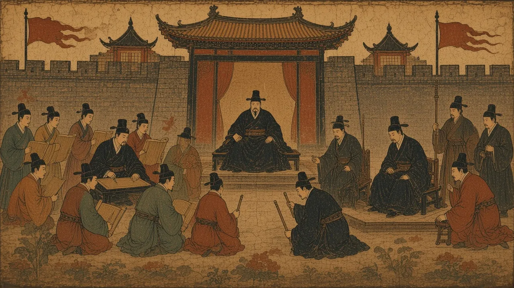
A balanced scene: on one side a scholar teaches from bamboo books, on the other clerks tally records and a magistrate judges, both beneath one imperial canopy. AI-generated interpretation in Han tomb-mural style, not a historical record.
Synthesis of this lecture
Why Did Han Last?
Han preserved the centralized empire created by Qin but made it more adaptable.
Reduced some burdens after war
Managed and gradually reduced the autonomy of regional kingdoms
Combined diplomacy and warfare on the frontier
Expanded state revenue when empire became expensive
Recruited officials trained in the Confucian classics
Qin built the imperial machine. Han made it durable, but not invulnerable.
Synthesis of this lecture; see the sources on the preceding slides (Ebrey, Ch. 3, pp. 42–44).
Self-check · Segment 3 · not graded
Check Yourself: Emperor Wu and the Confucian State
Answer each question from memory, out loud or on paper, then click Show answer. Nothing here is graded or recorded.
1. Name three ways Emperor Wu raised money for his wars.
Any three: minting coins, confiscating nobles’ land, selling offices and titles, taxing private businesses, selling goods collected as taxes (p. 43).
2. What happened in 119 BCE?
The state set up monopolies on iron, salt, and liquor (p. 43).
3. What did Dong Zhongshu advise, and what did Emperor Wu decree?
Honor only the Confucian classics; officials chosen for Confucian virtues and a national university to train them (p. 44).
4. Why did emperors find Confucian officials efficient?
Their ingrained sense of duty meant they needed less supervision than the Legalist model required (p. 44).
5. What does “Confucian rhetoric + Legalist bureaucratic methods” mean?
Han joined Confucian moral language and the Son of Heaven ideal to Qin’s centralized bureaucratic structures (p. 44).
Analyze the economic and military policies initiated by Emperor Wu. How did his administration alter the relationship between the centralized state and private enterprise?
How did Emperor Wu’s patronage transform Confucianism into a practical tool for imperial governance, and what was the defining role of the scholar-official in this system?
A bird's-eye view of the walled Han capital Chang'an at dawn: palaces, markets, and roads busy with carts, officials, and farmers. AI-generated interpretation in Han tomb-mural style, not a historical record.
Beyond the lecture
Pierian Spring
Independent Study
Today's lecture ends here. Continue on your own: the stories below finish this chapter's history, and each ends with a review question to answer.
"A little learning is a dang'rous thing; Drink deep, or taste not the Pierian spring."Alexander Pope, An Essay on Criticism, 1711
Independent study · Empress dowagers and consort families · 195–180 BCE
Empress Lü: Power After Gaozu
Wife of Emperor Gaozu and mother of Emperor Hui; Gaozu died in 195 BCE.
Hui became emperor, but Lü increasingly dominated court politics.
After Hui died in 188 BCE, Lü continued ruling through young Liu emperors.
As empress dowager, she became the most powerful figure in the Han court.
The emperor held the title. Empress Lü increasingly controlled the government.
Review question to answer · Q3
Contrast the founding of the Han Dynasty by Liu Bang (Emperor Gao) with the rule of the preceding Qin Dynasty. In what ways did the early Han administration simultaneously adopt and modify Qin political structures?
Empress Lü (Lǚ): regency and court power. Course illustration, not a portrait from her lifetime.
Independent study · Near usurpation · 180 BCE
When the Empress’s Family Becomes a Rival
Lü placed members of the Lü clan in powerful positions and gave relatives royal titles.
This challenged the dominance of the Liu imperial family.
When Lü died in 180 BCE, Liu princes and senior officials moved against her clan.
The Lü faction was destroyed, and Emperor Wen restored clear Liu control.
Near usurpation: the struggle was no longer just over influence at court; it was over which family would control the dynasty.
Review question to answer · Q3
Contrast the founding of the Han Dynasty by Liu Bang (Emperor Gao) with the rule of the preceding Qin Dynasty. In what ways did the early Han administration simultaneously adopt and modify Qin political structures?
Liu princes and senior officials with armed guards burst into a palace hall where members of the empress's clan sit in high seats. AI-generated interpretation in Han tomb-mural style, not a historical record.
Independent study · A recurring problem
A Recurring Problem of Imperial Rule
Child or weak emperor → empress dowager becomes regent → her natal family gains influence → court factions compete for access to the throne
This became a recurring problem across later Chinese dynasties. Wu Zetian eventually became emperor; Empress Dowager Cixi dominated Qing politics through regency and court control.
Bottom line: Hereditary monarchy needed regents, but regents could become rival centers of power.
How do you protect a young emperor without creating someone powerful enough to replace him?
Review question to answer · Q3
Contrast the founding of the Han Dynasty by Liu Bang (Emperor Gao) with the rule of the preceding Qin Dynasty. In what ways did the early Han administration simultaneously adopt and modify Qin political structures?
Patricia Buckley Ebrey, A History of China, Chapter 3, “The Founding of the Bureaucratic Empire: Qin-Han China (256 B.C.E.–200 C.E.),” pp. 41–45 (“The Xiongnu and the Great Wall,” “The Han Dynasty,” “Official Support for Confucianism,” “Wang Mang,” and “Palace Eunuchs”).
Beyond the textbook
Sima Qian, Shiji (Records of the Grand Historian) 6–10 (Qin, Xiang Yu, Gaozu, Empress Lü, Emperor Wen), 57 (Zhou Yafu), 106 (King of Wu), 110 (the Xiongnu). Ban Gu, Hanshu 6 (Emperor Wu) and 88 (the university of 124 BCE).
Images
Title card, the portraits of Emperor Gaozu, Emperor Wu, and Empress Lü, the Xiongnu frontier map, the Xiongnu horseman, the heqin ceremony, the Han soldier, and the scholar-official are course illustrations carried over from the original deck. The chalkboard cartoon of Professor Austin, used on the three concept slides, was supplied by Steven Austin. All other images are AI-generated interpretations in the Chapter 3 Han tomb-mural style; not primary-source evidence. Each caption says so.